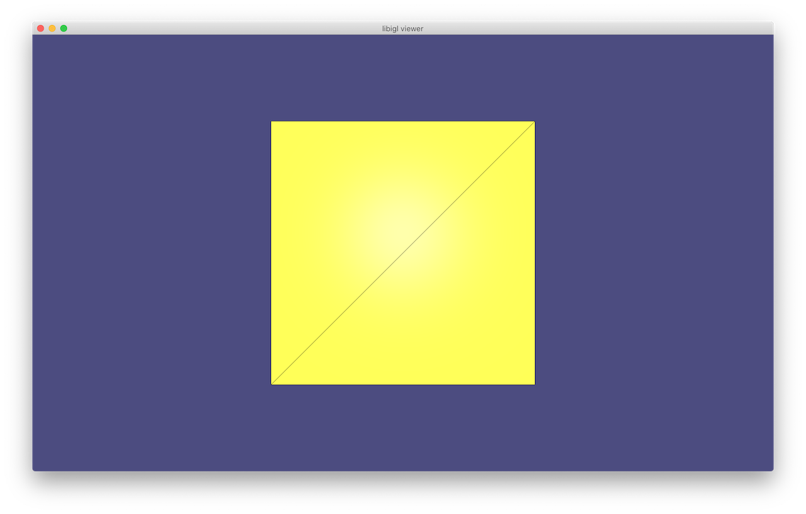

libigl example project¶
A blank project example showing how to use libigl and cmake can be found here. Feel free and encouraged to copy or fork this project as a way of starting a new personal project using libigl.
See the tutorial first¶
Then build, run and understand the libigl tutorial.
Dependencies¶
The only dependencies are the STL, libigl, Eigen3 (included in libigl) and
the dependencies of the igl::opengl::glfw::Viewer.
libigl can be installed by cloning the git repository on your computer:
git clone https://github.com/libigl/libigl.git
For ease of use, it can be a good idea to place your example project right next to the libigl folder.
For example, if libigl is installed in ~/foo/libigl, then you can create a copy of the example project right next to it:
git clone https://github.com/libigl/libigl-example-project.git ~/foo/libigl-example-project
Compilation¶
Compile this project using the standard CMake routine:
mkdir build
cd build
cmake ../
make
Just make sure that CMake is able to find libigl.
To do so CMake checks a few directories and environment variables, see FindLIBIGL.cmake.
If your libigl version is located elsewhere, you can set the environment variable LIBIGL_DIR to the root directory of libigl, or pass this variable when invoking CMake from the command line:
cmake -DLIBIGL_DIR=<path-to-libigl> ..
This should find and build the dependencies and create a example_bin binary.
Run¶
From within the build directory just issue:
./example_bin
A glfw app should launch displaying a 3D cube.

Enabling optional modules via cmake¶
The example project already requires the glfw module. This shows up in the CMakeLists.txt in two places:
igl_include(glfw)
…
target_link_libraries(${PROJECT_NAME} PUBLIC igl::glfw)
Suppose you’d like to add another module, for example, so that you can include #include <igl/copyleft/tetgen/tetrahedralize.h> then you’d change these to:
igl_include(copyleft tetgen)
…
target_link_libraries(${PROJECT_NAME} PUBLIC igl::glfw igl_copyleft::tetgen)